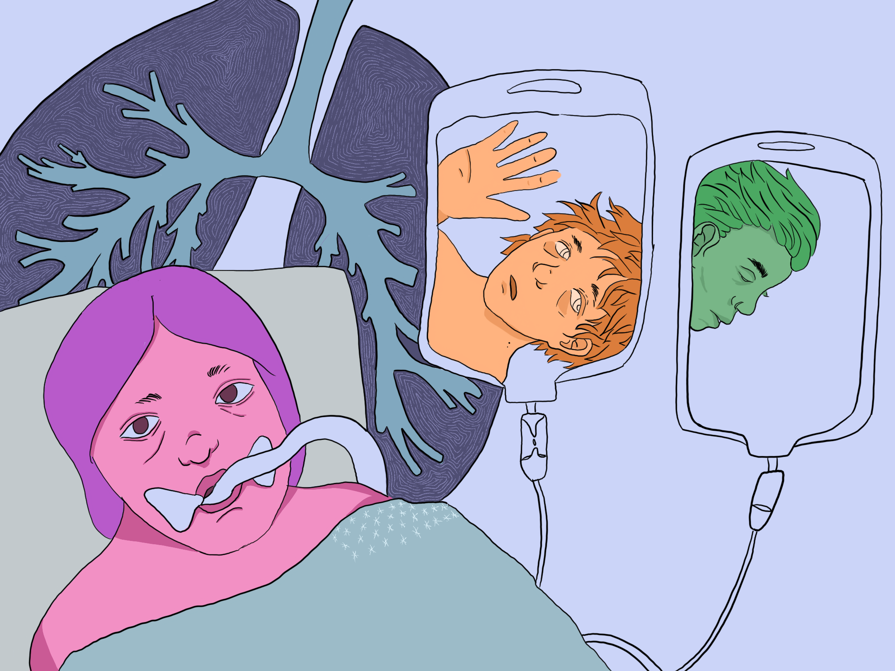

January
New Beginnings. 80 Lafayette, nights in SOHO.
Freedom & independence. 636 Greenwich, walks by the pier. walking through snow
February
March
2020
COVID crisis, leaving the city, trauma
2021
Mother falls ill, repeat of the trauma of the year before.
"Hello, I'd like to speak to my mother, Raquel."
"Hello, can you transfer me to the ICU nurse station?"
"Ally, it's Terri. Your mother is being intubated today. There's a 50/50 chance she won't make it. You're her next of kin. If anything happens, the hospital will call you first. I'm really sorry, it doesn't look good..."

April

Returning home, spending time with family. Zoom is new, living with my sister.
Carrying through as my mother recovers. Watching things unfold from a distance.
May
Stress, stress, and more stress. Talking with friends from home. Flowers from a date.
Spring 2021, Alison A. Frank